Home / Films
Films
Films
26 films, 151:54 in all, by program. The films of the Crank Boy (the Futuretown shorts and the Town) are in its film library, which also lists these.
The Crash-Test Family
The crash-test family, in three films: 3 films in order. From a first pencil test of ball-and-cord figures to the full measured bay. Each film adds what the one before could not do.
 Bolas · videotextThree experiments from From Imagetext to Worldtext, acted by ball-and-cord figures: a call that builds a doorway, a door that needs somewhere to lead, and a pile of matches sorted into reasons.
Bolas · videotextThree experiments from From Imagetext to Worldtext, acted by ball-and-cord figures: a call that builds a doorway, a door that needs somewhere to lead, and a pile of matches sorted into reasons. The PhysicalBola reports for a physical and every test goes wrong in a cartoon way: 47 proofs in six acts that one skeleton can walk, reach, lift, slip, sulk and swoon.
The PhysicalBola reports for a physical and every test goes wrong in a cartoon way: 47 proofs in six acts that one skeleton can walk, reach, lift, slip, sulk and swoon. Crash Lab132 vignettes in a measured bay: letters opened, shoulders touched, doors pushed, stairs missed, and the 32 Acting Arena challenges, each scored for weight, feet, hands and contact.
Crash Lab132 vignettes in a measured bay: letters opened, shoulders touched, doors pushed, stairs missed, and the 32 Acting Arena challenges, each scored for weight, feet, hands and contact.CINEOSIS
CINEOSIS, in five passes: 8 films in order. The same 45 signs of Deleuze's cinema books, performed again each time with less machine and more hand: first in the bay, then fitted into six archive clips by hand, then into 84 by an automatic pipeline, then by hand into all of them with blind review, and finally a making-of. The three reels are cuts of the handmade film.
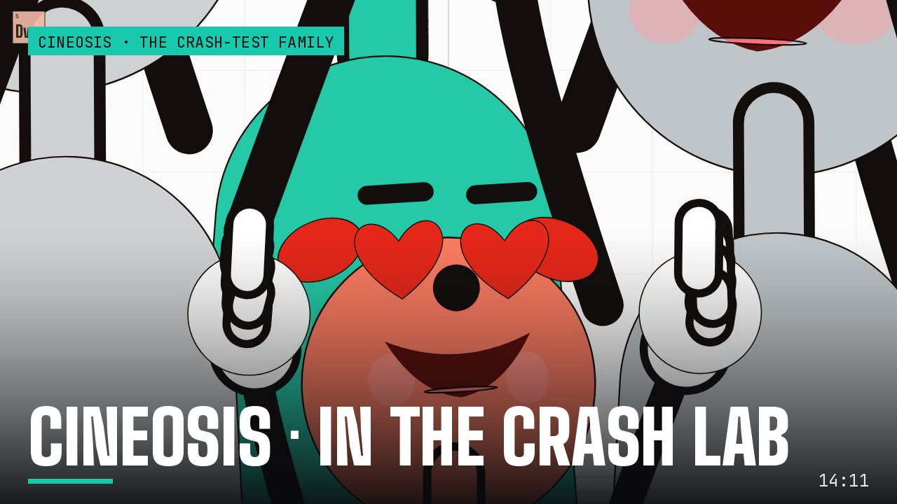
CINEOSIS · in the crash labThe family performs all 45 signs over 59 measured worlds, each sign its own shot list of cameras, cuts, mirrors and time maps.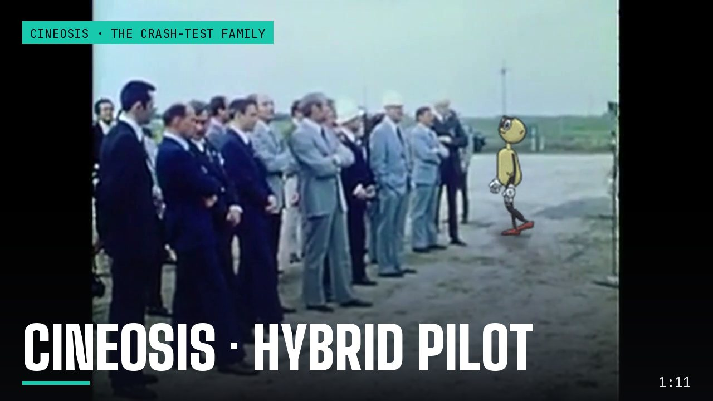
CINEOSIS · hybrid pilotSix signs, six real archive clips: the dummies fitted by hand into each plate's camera, light and occlusion, from a lamplit desk to a moving raft. CINEOSIS · hybrid atlas84 passages across all 45 signs: an automatic pipeline picks two archive clips per sign, finds the ground, and walks Bola into each one.
CINEOSIS · hybrid atlas84 passages across all 45 signs: an automatic pipeline picks two archive clips per sign, finds the ground, and walks Bola into each one.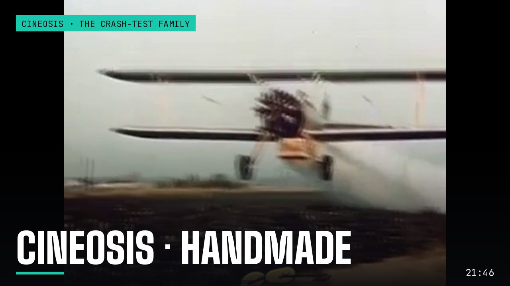
CINEOSIS · handmadeEvery sign authored by hand over unaltered archive clips, two passages per sign, each reviewed blind by a fresh critic.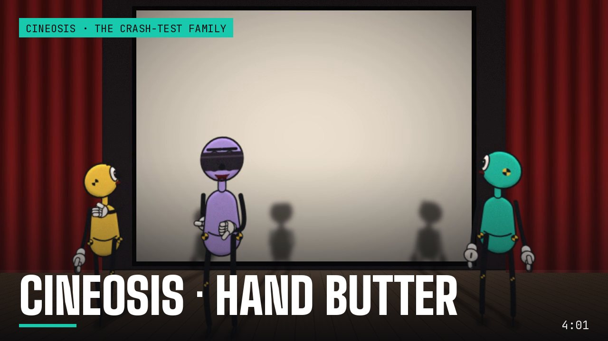
CINEOSIS · Hand ButterThe making-of, performed in a screening room by the film's own cast: Bola and Shim show their work, and a blindfolded Critic judges the pictures without knowing what was meant.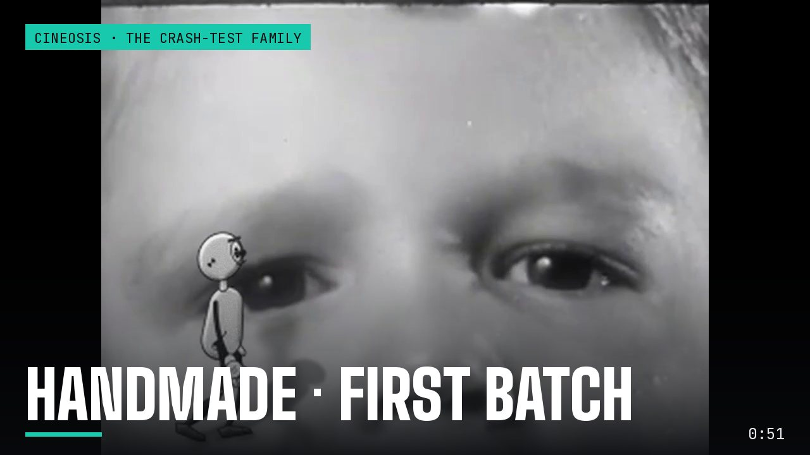
Handmade · first batchThe first hand-authored passages, before the first blind review.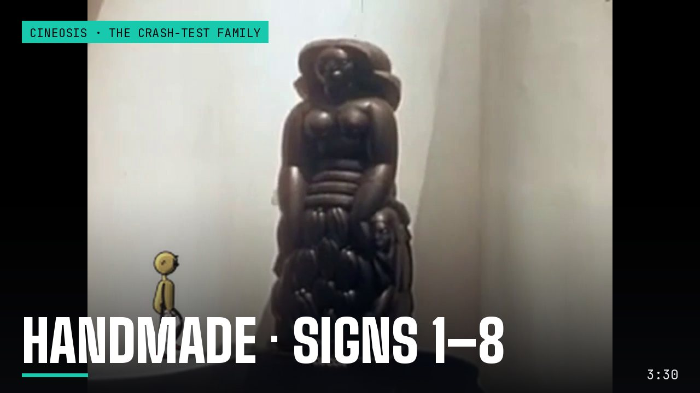
Handmade · signs 1–8Review reel of the handmade passages for signs 1 to 8.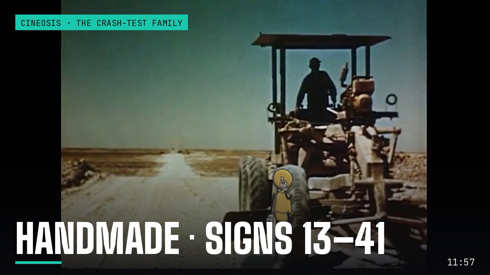
Handmade · signs 13–41Review reel of the handmade passages for signs 13 to 41.The Found Odyssey
The Found Odyssey: finding the look: 4 films in order. Before the episodes: how the drawn cast should meet archive footage. Three first shots, six ways to draw them, the chosen way, and the first cut of an episode opening. These led to the seven episodes. The Found Odyssey: seven episodes: 7 films in order. One book of the Odyssey per episode, each running one formal experiment. Watch them in order or in any order.
 Episode 1 · NOBODYBook 9 in three minutes: a prompt box asks for the hero's name, the archive asks for "our young friend's", and Odysseus answers "Nobody."
Episode 1 · NOBODYBook 9 in three minutes: a prompt box asks for the hero's name, the archive asks for "our young friend's", and Odysseus answers "Nobody." Episode 2 · THE GUEST-GIFTThe Cyclops again, as a flashback at the Phaeacian feast, told by two tellers who remember it differently. The experiment: the recollection-image.
Episode 2 · THE GUEST-GIFTThe Cyclops again, as a flashback at the Phaeacian feast, told by two tellers who remember it differently. The experiment: the recollection-image. Episode 3 · THE RAFTBook 5 as one story, each act seen from the point of view of whoever is watching it: the gods on their television, Calypso, Poseidon, the sea.
Episode 3 · THE RAFTBook 5 as one story, each act seen from the point of view of whoever is watching it: the gods on their television, Calypso, Poseidon, the sea. Episode 4 · CIRCEBook 10 re-cut around one line per scene, the place where power shifts: the Laestrygonians, Circe, and the order to sail to the house of Death.
Episode 4 · CIRCEBook 10 re-cut around one line per scene, the place where power shifts: the Laestrygonians, Circe, and the order to sail to the house of Death.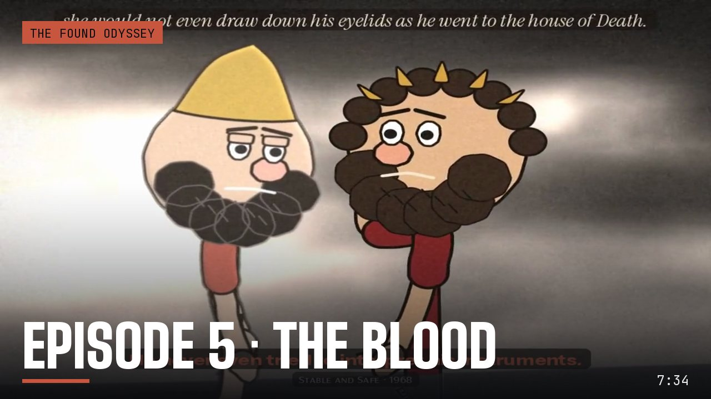
Episode 5 · THE BLOODBook 11 in grey, where the only colour is the blood in the trench and whichever shade has drunk it.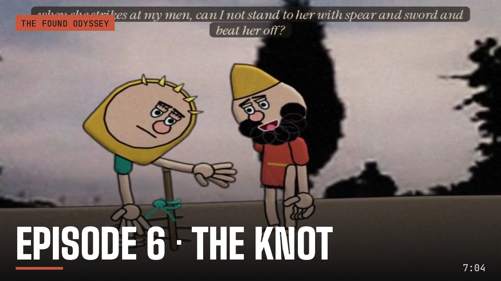
Episode 6 · THE KNOTBook 12, built on hands that hold things: the mast, the cord, the oar. A held object is drawn inside the grip: palm, object, fingers, thumb.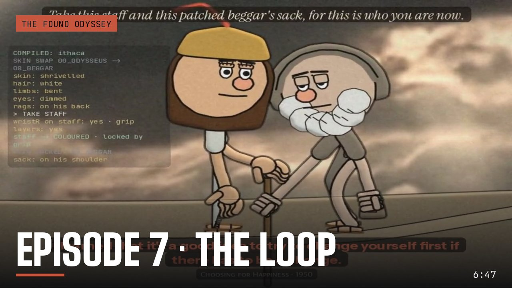
Episode 7 · THE LOOPBook 13 as a loop: seven agents try to land the sleeping man on Ithaca and fail, until a grip holds, Athena compiles, and the old beggar is put together part by part.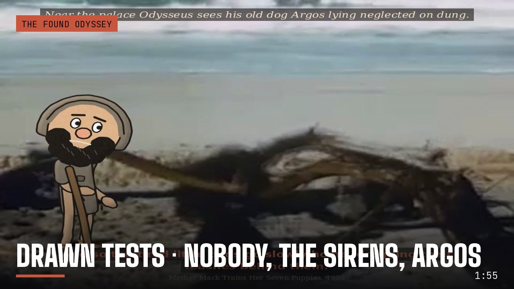
Drawn tests · NOBODY, THE SIRENS, ARGOSThe first three drawn shots: figures in archive plates, Homer asked by the CALL track and answered by archive speech.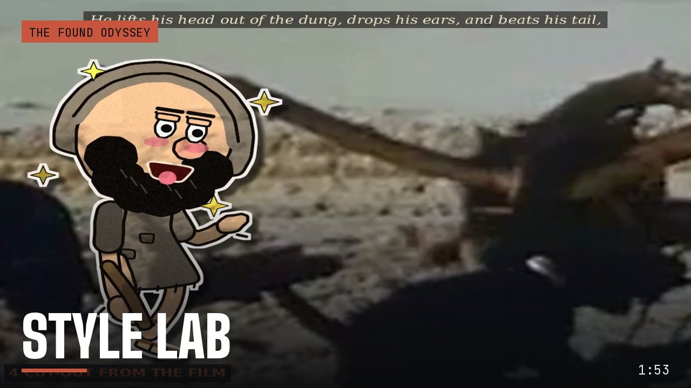
Style labSix ways for the drawing to meet the footage, from clean ink to matched film stock, played over the same two beats.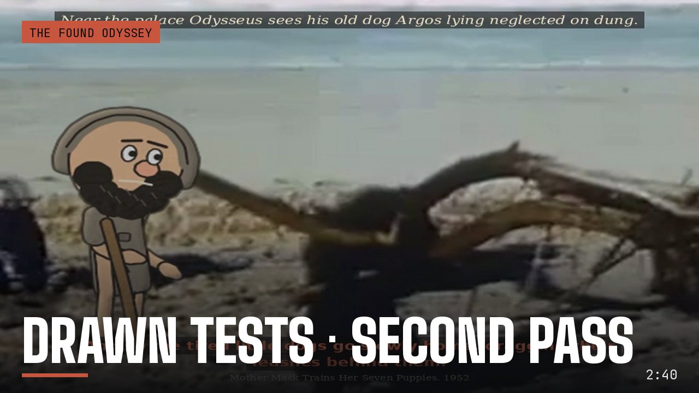
Drawn tests · second passThe chosen style applied to the three test shots.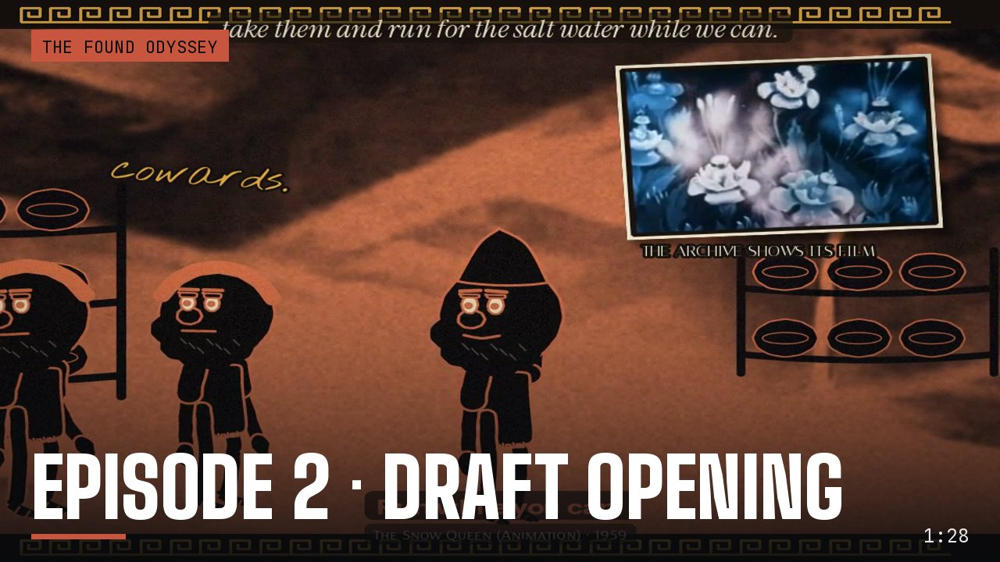
Episode 2 · draft openingFirst cut of Episode 2's cold open and title.WYGWYL
WYGWYL, from one ink cel to a poem: 4 films in order. The paper poet's build, in the order it was made: one ink cel, two looks, the jointed poet over his own plates, then a whole poem made by the automatic pipeline.
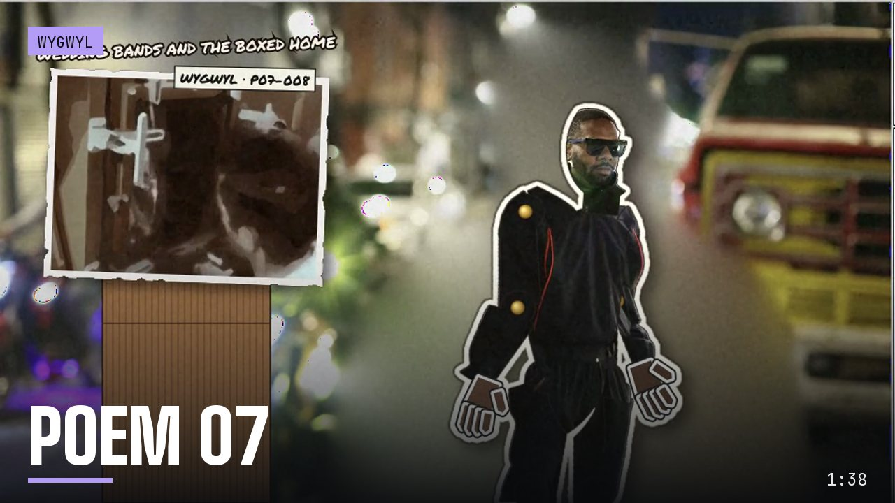
Poem 07Poem 07, all twelve patches, made by the automatic pipeline: gestures cued by the words, heads chosen by the rig, plates made from his photographs.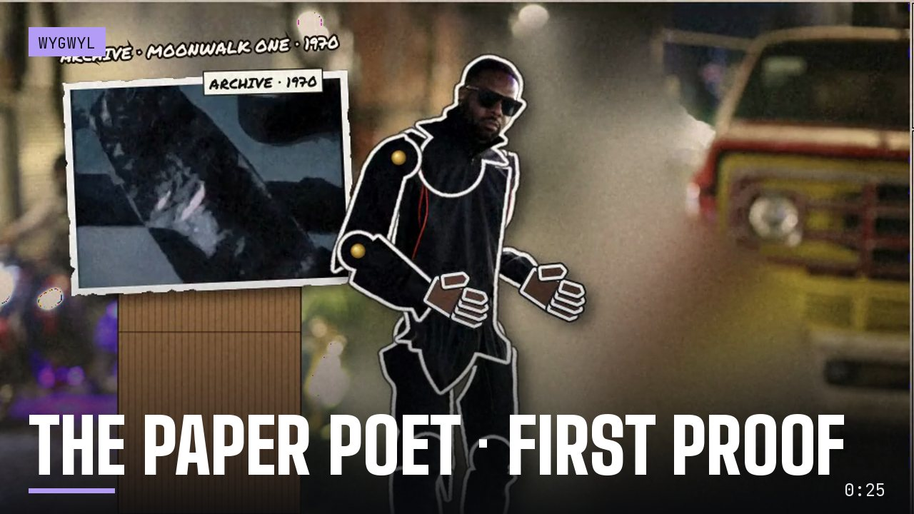
The paper poet · first proofThe poet as a jointed paper cut-out from his own photograph, over his Mexico City plates, with each patch's archive cel framed on a cardboard plinth.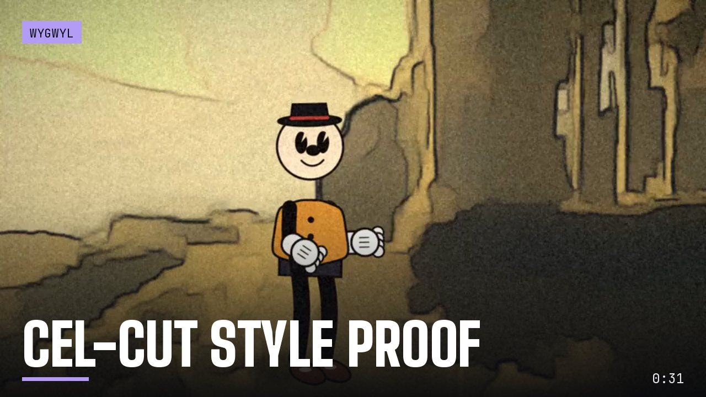
Cel-cut style proofTwo looks over the lab's cel cuts: a faceless figure under one hard light, and 1930s rubber hose on watercolour.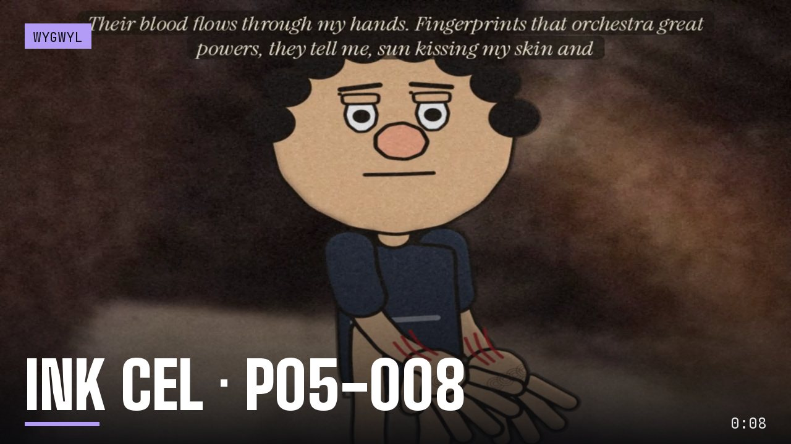
Ink cel · P05-008The first ink cel for WYGWYL: "Their blood flows through my hands."